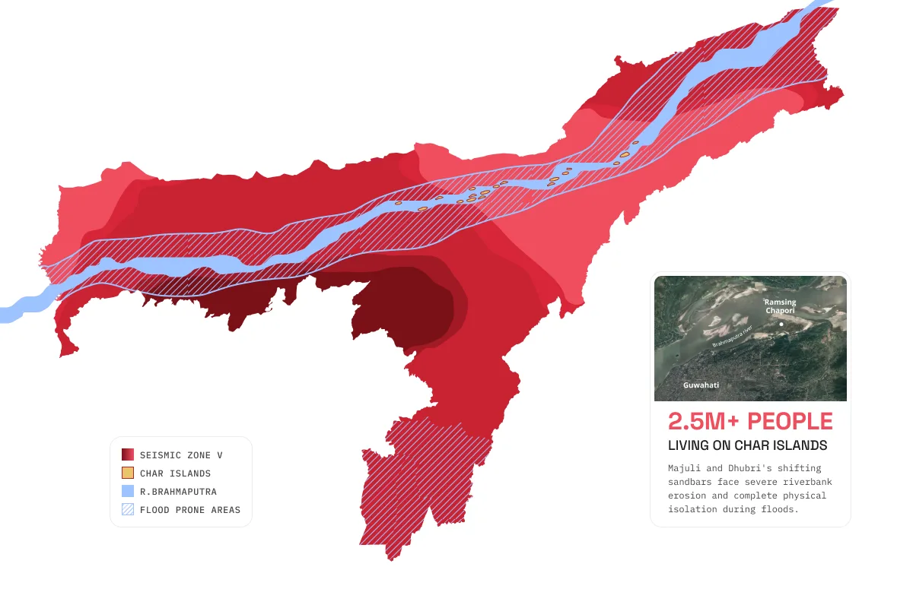
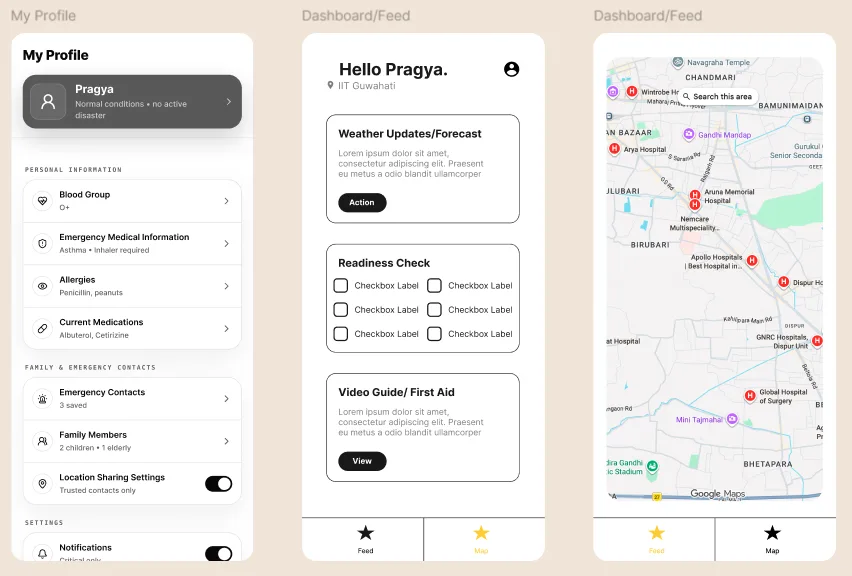
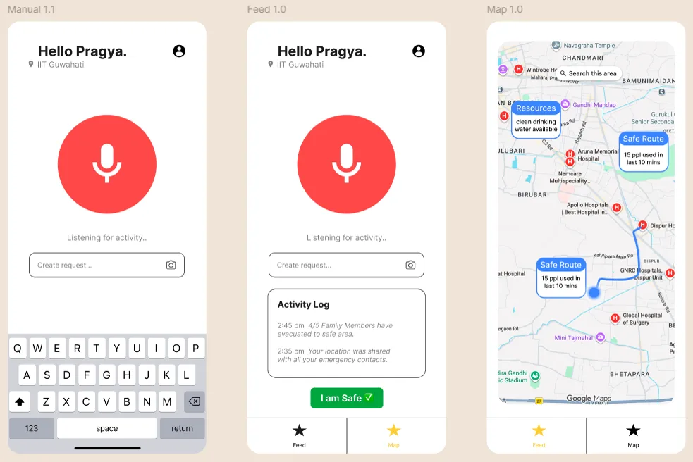
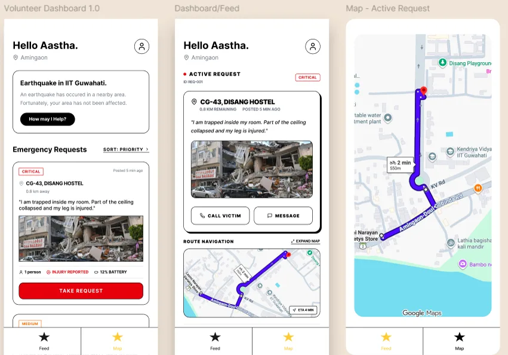
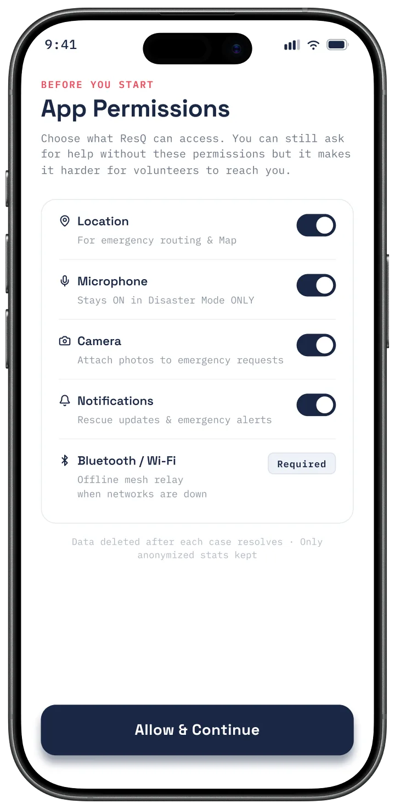
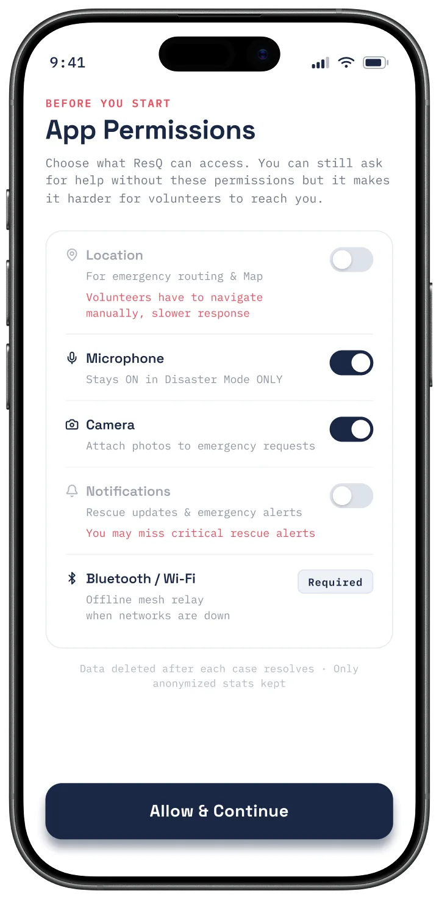
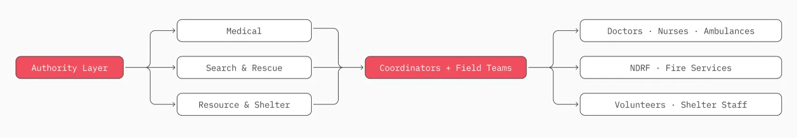
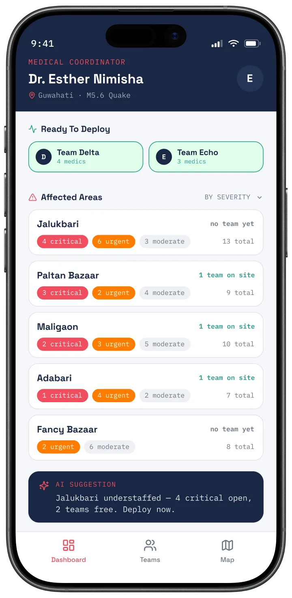
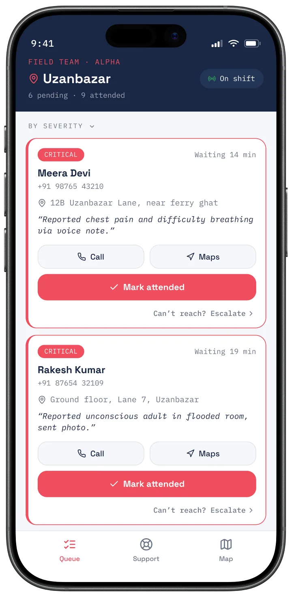

ResQ
The Brief
Enabling citizens of Assam to ask for help and help others during disasters — specifically when cellular networks fail.
Process
Understand
- Secondary Research on major disasters & their impact
- Talk to the people & understand how they behave during a crisis
- Analysing existing solutions (SACHET, Smart AXOM)
Ideate
- How to communicate without traditional network (mesh)
- User flows (Victim / Volunteer)
- Interactive map with live breadcrumbs for safe routes
Prototype
- Low fidelity wireframes
- High fidelity app screens
Secondary Research
Existing systems like SACHET and Smart AXOM are all top-down. I also learned about isolated Char Islands with a population of 2.5 million who are especially cut off during a crisis.

Understanding Users
I talked to Assamese friends who had lived through floods and earthquakes to find the design opportunities behind their raw reactions.
See all 5 user interview quotes
| What users said | Design opportunity |
|---|---|
| "sabse pehle mummy ko call lagaya tha... network hi nahi tha. bas wahi tension ho raha tha ki ghar pe sab theek hai ya nahi?" | Lightweight safety updates even when normal calls fail. |
| "whatsapp t bohut message ahi asil, kuntu xosa kuntu fake buji pua difficult hoi gol" (There were many messages on WhatsApp but it was difficult to know what was real and what was fake) | A single platform that gives verified updates, community reports and emergency info. |
| "i didn't need another news update. i needed to know where i should go." | Real-time updated resource map showing shelters, medical aid and nearby resources. |
| "phone haath mein tha, but itna panic tha ki kya likhu wohi samajh nahi aa raha tha" | Low-friction reporting methods such as one-tap actions, voice note and image uploads. |
| "ami help koribo bisarisilu kintu kaak ki dorkar hoise bujiye pua nasilu" (We were willing to help people but nobody knew who needed what) | A volunteer layer to connect nearby citizens with tasks and enable community-driven assistance. |
How Might We...
Ideation
Mesh networking and breadcrumb routing became the technical backbone for keeping the app useful with no cellular signal. Applying those concepts, I mapped out userflows.



Final Output
Ethics & Intelligence
To turn this from just a concept to a shipped product, various things need to be kept in mind.
1. Transparent Permissions
Listing all permissions upfront and informing users of the trade-off when they deny a permission.


2. Role Based Governance & Access
Personnel see domain specific details only. Coordinators do not see individual cases. Only field teams do. Field team members may update severity status on-site.



3. AI Usage
| Stage | Purpose |
|---|---|
| On-device Speech Recognition | Converts emergency voice requests to text without requiring internet connectivity. |
| Translation | Delivers the report in each volunteer's or responder's preferred language, enabling cross-language coordination. |
| Request Classification | Identifies the request as Medical, Search & Rescue, or Resources & Shelter for faster routing. |
| Severity Assessment | Estimates urgency to support initial triage. Field responders can update the severity after on-site assessment. |
AI for Supporting Operational Decisions. Once reports come in, AI helps coordinators spot understaffed areas and suggests deployments, but the coordinator always makes the final call.